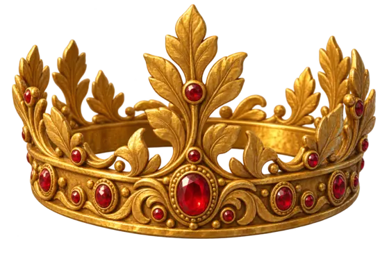
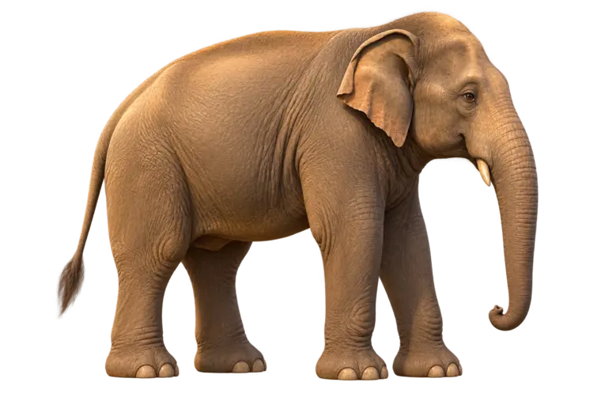
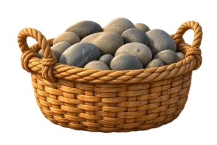
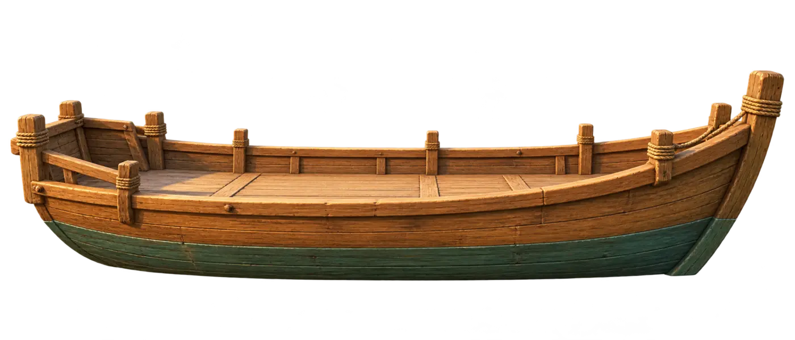
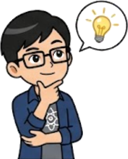

我們生活在空氣的海洋底部。空氣雖然輕，但整層大氣層疊加起來的重量，會對地表物體產生極大的壓力，這就是大氣壓力。
💡 吸管的真相：
我們不是把飲料「吸」上來，而是我們吸走管內空氣後，由外面的大氣壓力把飲料「壓」進管子裡的！
利用裝滿水銀 (Hg) 的玻璃管倒插在水銀槽中，大氣壓力剛好可以支撐起約 76 cm 高的水銀柱。
📐 垂直不變定律：
無論玻璃管粗細、或是將玻璃管傾斜，支撐的「垂直高度」永遠是 76 cm，因為水壓只跟垂直深度有關！
如果在托里切利實驗中，把密度 13.6 的水銀換成「清水 (密度 1.0)」。
請問：1 大氣壓力 (1 atm) 可以支撐起多高的「水柱」？
1. 1 大氣壓力的數值為 1033.6 gw/cm²。
2. 液體壓力公式為 P = h × D。
3. 將水的密度 D = 1.0 帶入公式，去反推水柱的深度 h。
P水 = P大氣
h × 1.0 = 1033.6
水柱高度 h = 1033.6 cm (大約 10 公尺高！)
這就是為什麼我們不用水來做氣壓計，因為管子要長達 10 公尺，也就是三層樓高才夠啊！
傳說國王懷疑金匠在皇冠裡混入了較便宜的金屬，卻命令阿基米德絕對不能熔化皇冠。已知皇冠與純金塊重量相同，你會怎麼比較？

不能敲、不能切、不能熔！
古代沒有能秤大象的巨大磅秤。March 扮演曹沖，能不能只靠一艘船、一條水線與幾籃石頭，找出大象的重量？




船＋大象＝船＋石頭；兩邊都有同一艘船，所以大象重量＝石頭總重。曹沖把不能直接秤的大象，轉換成可以分批秤量的石頭。
物體在流體中所受到的浮力，等於它所排開的流體重量。請不要只看公式：親手把鐵塊放入水中，同時比較彈簧秤減少多少、接水杯增加多少。
如果大象讓船排開某一重量的水，只要改放石頭，直到船回到同一條水線，就能知道大象重量嗎？
小明拿一個重 150gw 的鐵塊，掛在彈簧秤上。
接著他將鐵塊「完全沒入」水中，發現此時彈簧秤的讀數變成了 120gw。
請問：鐵塊所受的浮力是多少？鐵塊的體積又是多少？
1. 浮力就是「彈簧秤減輕的重量」。
2. 計算公式：浮力 B = 在空氣中重 - 在水中重。
3. 根據阿基米德原理，浮力 B = V排開 × D液體。因為是完全沒入水中，所以排開體積就等於鐵塊體積！(水的密度為 1.0)
1. 浮力 B = 150 - 120 = 30 gw
2. 代入公式：30 = V物 × 1.0
鐵塊體積 V = 30 cm³
將物體丟入液體中，命運取決於「密度」的對決：
相同質量的冰塊放入清水與濃食鹽水中。融化後，兩杯液面高度如何變化？
1. 冰變水，總質量不變！
2. 比較融化後的水體積 (V融化) 與排開的坑洞體積 (V排)。
👉 清水：V排 = V融化，高度不變！
👉 鹽水：V排 < V融化，高度上升！
四個體積相同的物體，請問浮力大小關係？
阿基米德原理：看「誰泡在水裡面的體積最多」。
BC = BD > BB > BA
「同一個木塊」丟入清水與食鹽水皆為浮體。哪杯浮力較大？
浮體的靜力平衡：浮力 B 永遠等於物重 W。木塊重量會變嗎？
一樣大！(B水 = B鹽 = W)
大船從海水 (D=1.03) 駛入淡水 (D=1.0)：
深海吐出的氣泡，往上飄會越來越大且加速！